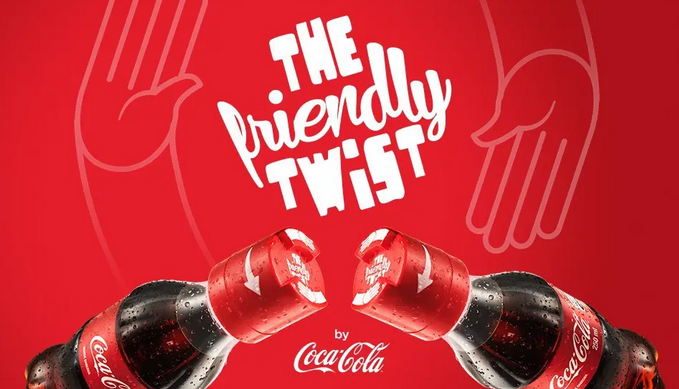
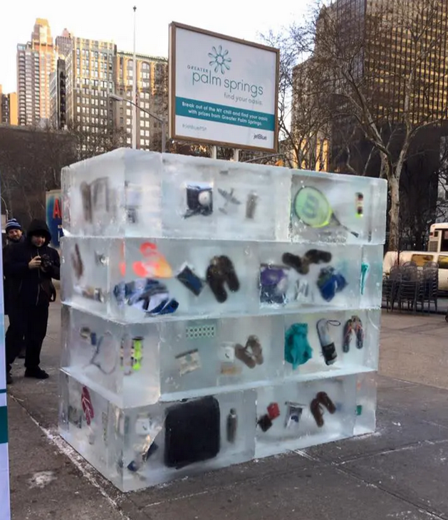

Aujourd’hui, le marketing ne consiste plus seulement à faire passer un message ou à vanter les qualités d’un produit.
Les consommateurs sont exposés en permanence à la publicité, ce qui rend de plus en plus difficile l’émergence
des marques dans leur quotidien.
Face à cette saturation, certaines marques choisissent de se démarquer autrement, en proposant des expériences
inattendues, capables de surprendre, d’émouvoir ou de faire réagir. La surprise devient alors un moyen efficace
d’attirer l’attention, mais surtout de créer un moment marquant, qui sort de l’ordinaire et reste en mémoire.
Ce site présente deux pratiques marketing qui ont particulièrement retenu l’attention par leur originalité
et par les réactions qu’elles ont suscitées :
Une bouteille Coca-Cola conçue pour ne pouvoir être ouverte qu’à deux, transformant un geste banal en moment partagé ;
Une opération de street marketing reposant sur un bloc de glace renfermant des cadeaux, invitant les passants à
« briser la glace ».
Bien que très différentes dans leur forme, ces deux surprises reposent sur des mécanismes similaires.
Elles mettent l’accent sur l’expérience vécue par le consommateur plutôt que sur le produit ou l’offre en elle-même.
Elles jouent sur les émotions, la curiosité et l’interaction, et donnent à la marque une place plus humaine et plus
mémorable.
À travers l’analyse de ces deux exemples, l’objectif est de comprendre en quoi la surprise peut devenir un véritable
levier marketing, à condition d’être cohérente avec l’identité de la marque, son secteur d’activité et les attentes
des consommateurs.


🥤 Surprise n°1 : Coca-Cola – Friendly Twist
Présentation
La surprise imaginée par Coca-Cola repose sur un objet du quotidien : la bouteille.
En apparence classique, celle-ci cache pourtant une contrainte d’usage inattendue :
son bouchon ne peut être ouvert qu’à deux personnes en même temps.
Ce mécanisme simple transforme un geste habituellement automatique et individuel
en une action collective. Pour pouvoir consommer le produit, le consommateur est
obligé d’interagir avec quelqu’un d’autre, qu’il s’agisse d’un ami ou d’un inconnu.
La consommation devient alors un moment partagé, suscitant échange, sourire et
parfois rencontre.
Déployée principalement dans des contextes universitaires, l’opération « Friendly Twist »
repose sur une logique d’activation terrain : les bouteilles sont distribuées gratuitement
afin de provoquer une expérience immédiate, vécue sur place, plutôt qu’un message
publicitaire explicite.
À travers cette contrainte volontaire, Coca-Cola ne cherche pas à modifier le goût ou
la composition du produit, mais à enrichir l’expérience de consommation en lui donnant
une dimension sociale et relationnelle.
Justification du choix & réactions personnelles
Cette pratique a retenu mon attention pour plusieurs raisons.
D’abord, elle surprend par sa simplicité conceptuelle : Coca-Cola ne cherche pas à impressionner par la performance du produit, mais par l’expérience qu’il génère. Un simple changement de bouchon suffit à modifier le comportement du consommateur.
Ensuite, cette surprise m’a suscité une réaction émotionnelle positive. Elle provoque à la fois de la curiosité, un léger étonnement, puis un sourire lorsque l’on comprend le mécanisme. Le produit devient un prétexte à l’échange, ce qui contraste avec des usages de consommation de plus en plus individualisés.
Enfin, elle m’a amenée à réfléchir au rôle du packaging : ici, il ne sert plus uniquement à protéger ou identifier le produit, mais devient un véritable support d'échange et de partage. Cette capacité à transformer un objet banal en expérience mémorable explique pleinement le choix de cette surprise
Cette surprise s’inscrit dans un environnement marqué par une forte saturation
des messages publicitaires. Les consommateurs, exposés en permanence aux campagnes
de communication, développent une forme de lassitude et de résistance, incitant les
marques à repenser leurs modes d’expression.
Dans le secteur des boissons gazeuses, arrivé à maturité et fortement concurrentiel,
les marges de différenciation par le produit sont limitées. Les marques doivent donc
trouver d’autres leviers pour créer de la valeur et se distinguer, notamment à travers
l’expérience proposée autour de la consommation.
Le packaging devient alors un élément stratégique, non plus seulement fonctionnel,
mais porteur de sens et de positionnement. En agissant sur l’usage plutôt que sur le
discours, Coca-Cola transforme le produit en support d’interaction.
Cette approche est pleinement cohérente avec l’identité de Coca-Cola, historiquement
associée à la convivialité, au partage et aux moments collectifs. Plutôt que de revendiquer
ces valeurs à travers un message publicitaire, la marque choisit de les incarner
concrètement dans l’expérience proposée au consommateur, renforçant ainsi la crédibilité
et la sincérité de sa prise de parole.
Retombées & accueil de la surprise
La campagne Coca-Cola autour de la bouteille conçue pour être ouverte à deux a bénéficié d’un accueil globalement positif.
L’idée a été largement relayée sur les réseaux sociaux, notamment via des publications mettant en avant le caractère social
et ingénieux du packaging. Par exemple, un
post publié par le média créatif Creapills sur LinkedIn
présente le concept comme une initiative originale visant à recréer du lien social à travers un objet du quotidien.
Cette publication a suscité de nombreuses réactions et commentaires, certains saluant une idée « créative » ou « maligne »,
tandis que d’autres soulignent des limites pratiques ou environnementales, ce qui témoigne d’un réel engagement autour de l’opération.
Lors de la phase d’activation, environ 3 000 bouteilles « Friendly Twist » ont été distribuées, impliquant directement
3 000 participants, principalement dans des contextes universitaires.
Lien vers le projet Behance
La campagne a également été reprise par des créateurs de contenu et des pages spécialisées en marketing et publicité,
renforçant ainsi sa diffusion organique. Sur Instagram, plusieurs vidéos montrant le fonctionnement de la bouteille et
les réactions des utilisateurs ont circulé, illustrant le potentiel viral de cette surprise visuelle et immédiatement compréhensible.
Par exemple, un
reel Instagram
montre le concept en situation réelle, tandis que d’autres publications, comme
ce post
ou encore
cette mise en scène similaire,
mettent en avant l’aspect ludique et interactif du dispositif.
Au-delà des réseaux sociaux, l’opération a également généré une forte visibilité vidéo, avec plus de 7,4 millions de vues
cumulées sur YouTube en l’espace de deux semaines, confirmant l’ampleur de sa diffusion en ligne.
Ces relais ont généré un important bouche-à-oreille digital, sans que Coca-Cola n’ait besoin d’investir massivement en achat
d’espace publicitaire. Ce type d’opération favorise des retombées médiatiques dites organiques : ce sont les consommateurs,
les créateurs de contenu et les observateurs du marketing eux-mêmes qui diffusent l’expérience, prolongeant ainsi la visibilité
de la campagne bien au-delà de son lieu de déploiement initial. Au total, la campagne a donné lieu à plus de 50 retombées
médiatiques (earned media) dans des médias spécialisés et des plateformes créatives.
La surprise a également été reprise par la presse spécialisée. Le média
La Réclame
décrit l’opération « Friendly Twist » comme un exemple de packaging intelligent, utilisé notamment dans des contextes
universitaires, visant à encourager les rencontres et les interactions. Cette couverture renforce la perception de
Coca-Cola comme une marque capable d’intégrer sa promesse de partage directement dans le produit.
Enfin, aucune polémique majeure n’a émergé autour de cette campagne. Les rares critiques formulées dans les commentaires
portent principalement sur le caractère potentiellement gadget de l’objet ou sur des considérations environnementales,
mais elles restent marginales au regard de l’accueil globalement favorable. Cela témoigne d’une bonne adéquation entre
l’idée proposée, l’identité de la marque Coca-Cola et les attentes du public.
Analyse critique
Cette surprise peut être considérée comme globalement positive, tant par son originalité que par sa cohérence avec
l’identité de la marque.
D’un côté, elle apporte une vraie valeur expérientielle : le consommateur ne fait pas que boire une boisson, il partage
un moment avec quelqu’un d’autre. Elle crée également une valeur symbolique forte, en associant la consommation à des
idées de partage, de rencontre et de lien social. Le packaging dépasse alors sa fonction première pour devenir un
véritable outil au service du message de marque.
Dans un contexte universitaire, cette contrainte d’usage prend tout son sens, car les échanges et les rencontres y
sont naturels et encouragés. Néanmoins, cette logique reste très dépendante de la situation de consommation : en
dehors de ces environnements spécifiques, le concept pourrait perdre en pertinence et susciter une certaine frustration
chez un consommateur isolé.
Par ailleurs, l’effet de surprise repose sur son caractère ponctuel. Si l’idée venait à être répétée ou généralisée,
elle risquerait de perdre de son impact et d’être perçue comme un simple gadget marketing. L’intérêt de l’opération
tient donc autant à son originalité qu’à son usage limité et bien ciblé.
En définitive, l’efficacité de cette surprise dépend étroitement du contexte dans lequel elle est déployée et de sa
capacité à rester une expérience exceptionnelle, pensée avant tout comme un moment de partage.
Critique constructive
Pour aller plus loin, Coca-Cola pourrait enrichir cette initiative sans en remettre en cause la pertinence.
Dans le contexte universitaire, où l’expérimentation et la découverte sont favorisées, la marque pourrait par exemple
accompagner le packaging d’un dispositif explicatif léger (QR code, message imprimé ou signalétique sur le lieu de distribution).
Cela permettrait de renforcer la compréhension immédiate du concept et d’enrichir le storytelling autour de l’idée de partage.
Par ailleurs, tout en conservant le campus comme terrain d’activation principal, Coca-Cola pourrait envisager des déclinaisons
ponctuelles de ce concept lors d’événements ciblés (festivals étudiants, événements sportifs universitaires, journées
d’intégration), afin d’amplifier l’impact de l’expérience sans la dénaturer.
Enfin, cette logique de packaging expérientiel pourrait servir d’inspiration à d’autres marques, y compris en dehors
du secteur alimentaire, souhaitant créer de la valeur non pas par la performance du produit, mais par l’expérience
collective et le lien social qu’il génère.
❄️ Surprise n°2 : JetBlue – Ultimate Ice Breaker
Présentation
La seconde surprise correspond à l’opération « Ultimate Ice Breaker », imaginée par la compagnie aérienne JetBlue
en partenariat avec le Greater Palm Springs Convention & Visitors Bureau. Déployée en plein hiver à New York, cette
activation de street marketing cherchait à promouvoir les vols directs vers Palm Springs en jouant sur un contraste
climatique immédiatement compréhensible.
L’installation prenait la forme d’un bloc de glace géant et transparent, dans lequel étaient enfermés des accessoires
estivaux et des récompenses attractives, comme des billets d’avion ou des expériences touristiques. Les passants étaient
invités à interagir directement avec le dispositif en tentant de briser la glace pour accéder aux cadeaux, transformant
l’espace urbain en un moment ludique et participatif.
À la fois défi concret et métaphore du voyage, cette surprise invitait symboliquement à « briser la glace » pour échapper
à l’hiver new-yorkais et s’offrir une parenthèse ensoleillée. Prolongée sur les réseaux sociaux, l’opération a généré un
important bouche-à-oreille et renforcé l’image de JetBlue comme une marque créative, proche de ses publics.
🎥 Vidéo de l’opération “Ultimate Ice Breaker”
Justification du choix & réactions personnelles
Cette surprise a retenu mon attention par sa force visuelle immédiate. Le contraste entre la transparence de la glace
et les cadeaux visibles à l’intérieur attire naturellement le regard et suscite la curiosité. L’installation crée
une rupture dans le flux urbain, incitant les passants à s’arrêter, observer, puis participer.
Sur le plan émotionnel, cette opération génère un mélange d’amusement, de défi et d’excitation. Elle engage le public
non seulement mentalement, mais aussi physiquement, ce qui reste relativement rare dans les pratiques de communication
traditionnelles.
Elle m’a également amené à réfléchir à la capacité du marketing expérientiel à susciter le désir de voyage sans passer
par une mise en avant classique de la destination. Bien que Palm Springs et les billets d’avion soient présents,
le voyage est avant tout suggéré par le contraste, le jeu et l’émotion vécue, rendant l’expérience plus mémorable
que la simple exposition à une offre touristique.
Cette surprise prend place en plein hiver à New York, dans un contexte où le froid renforce naturellement le désir
d’évasion vers des destinations ensoleillées. En installant un bloc de glace géant dans l’espace public, l’opération
joue sur un contraste immédiatement perceptible entre l’environnement réel et l’imaginaire du voyage, opposant le
froid ambiant aux symboles de vacances visibles à l’intérieur de la glace.
Elle s’inscrit également dans le secteur très concurrentiel du transport aérien, où les compagnies doivent aujourd’hui
se démarquer autrement que par le prix ou les services proposés. Dans ce contexte, l’expérience de marque devient un
levier essentiel pour capter l’attention, susciter l’émotion et créer un lien durable avec les voyageurs potentiels.
Pour JetBlue, cette opération répond à un objectif clair : promouvoir de nouvelles liaisons directes entre New York et
Palm Springs tout en renforçant son image de marque accessible, créative et proche de ses publics. Fidèle à son ADN,
JetBlue privilégie ici une approche ludique et expérientielle, en cohérence avec son ton léger et engageant,
notamment sur les réseaux sociaux.
En combinant une activation physique dans l’espace public avec une forte diffusion digitale, la marque transforme une
simple annonce de ligne aérienne en une expérience marquante et partageable. Cette surprise illustre ainsi la capacité
de JetBlue à s’adapter à son environnement, à se distinguer dans son secteur et à incarner concrètement son identité
de marque.
Retombées & accueil de la surprise
L’installation Ultimate Ice Breaker de JetBlue a bénéficié d’un accueil largement positif, en particulier sur les réseaux sociaux.
Plusieurs passants ont filmé et partagé l’expérience, contribuant à la diffusion de contenus générés par les utilisateurs.
Par exemple, un post Instagram montrant l’activation en situation réelle
met en scène des participants en train de briser les blocs de glace, soulignant le caractère ludique, spectaculaire et interactif de l’opération.
Cette visibilité organique a permis à la campagne de dépasser largement le public physiquement présent sur le lieu de l’opération.
L’expérience a également été commentée et analysée dans des médias spécialisés. Sur
Medium,
l’article consacré à la campagne explique que JetBlue a réussi à transformer une simple promotion de vols en une expérience mémorable,
en jouant sur le contraste entre le froid new-yorkais et l’imaginaire ensoleillé de Palm Springs. L’autrice insiste notamment sur la capacité
de l’opération à générer du buzz et à créer un souvenir durable chez les participants.
L’opération a également été reprise par la presse professionnelle. Le média
BizBash,
référence dans le domaine de l’événementiel et du marketing expérientiel, décrit en détail le dispositif et souligne son efficacité pour capter
l’attention du public urbain. L’article met en avant le fait que les participants pouvaient gagner des billets d’avion et divers lots liés à Palm Springs,
renforçant ainsi la cohérence entre le message, l’expérience et l’offre promotionnelle.
Enfin, la reconnaissance de la campagne dépasse le cadre médiatique. Le site
Fruizz a classé Ultimate Ice Breaker
parmi les 10 meilleures opérations de street marketing, confirmant l’impact positif de cette activation dans le paysage
du marketing expérientiel.
Aucune critique négative majeure n’a dominé les retours. Certaines interrogations ont toutefois émergé concernant la mise en œuvre pratique
et l’effort physique demandé aux participants, mais celles-ci restent marginales au regard de l’accueil globalement enthousiaste suscité par la surprise.
Analyse critique
Cette surprise présente de nombreux points forts, notamment par sa capacité à capter l’attention et à créer une
expérience marquante.
Elle génère une forte valeur expérientielle en combinant émotion, jeu et implication physique. Le public ne se contente
pas d’observer : il participe activement, ce qui favorise l’engagement et la mémorisation. La métaphore de la glace,
utilisée à la fois comme support et comme symbole, fonctionne efficacement et renforce la cohérence entre le dispositif,
le message et l’objectif de communication.
Toutefois, ces qualités reposent sur une logique volontairement ponctuelle et événementielle. Le caractère localisé
de l’opération limite son impact direct à un public restreint, même si cette contrainte est en partie compensée par
la diffusion sur les réseaux sociaux. De plus, l’utilisation d’un bloc de glace de grande taille peut soulever des
interrogations environnementales, un sujet sensible pour des marques opérant dans un contexte de responsabilité
croissante.
Enfin, l’expérience peut susciter une certaine frustration chez certains participants, liée à la difficulté de
briser la glace ou au nombre limité de récompenses. Ces limites restent toutefois cohérentes avec la logique du jeu
et participent aussi à la dimension de défi qui fait l’originalité de l’opération.
Critique constructive
L’opération a déjà bénéficié d’une amplification digitale, notamment à travers les réseaux sociaux, où les images
et vidéos de l’événement ont largement circulé. Cette diffusion a permis de prolonger l’expérience au-delà de
l’installation physique et de toucher un public plus large.
Néanmoins, cette dimension digitale pourrait être encore davantage structurée afin de renforcer la continuité
narrative de la campagne. En développant plus explicitement le storytelling autour des expériences et des
récompenses cachées dans la glace, JetBlue pourrait accentuer la projection vers la destination et inscrire plus
durablement l’imaginaire du voyage dans l’esprit des publics.
Enfin, ce type de dispositif pourrait inspirer d’autres marques du secteur touristique ou événementiel, à condition
de rester attentif à la cohérence entre le concept, l’identité de la marque et les enjeux environnementaux. Cette
vigilance est essentielle pour préserver la crédibilité de l’opération et éviter toute incohérence auprès des
consommateurs.
Analyse Croisée
À première vue, la bouteille Coca-Cola à ouvrir à deux et l’opération « Ultimate Ice Breaker » de JetBlue n’ont pas grand-chose
en commun. L’une agit sur un produit du quotidien, l’autre sur un dispositif événementiel visible dans l’espace public.
Pourtant, elles reposent toutes les deux sur la même logique : faire vivre une expérience plutôt que simplement transmettre
un message marketing.
Avec Coca-Cola, la surprise est discrète mais efficace. Un geste que l’on fait machinalement, ouvrir une bouteille,
devient soudainement impossible à réaliser seul. Cette contrainte oblige à demander de l’aide, à échanger quelques mots,
parfois même à faire une rencontre. Boire un Coca ne se résume plus à consommer une boisson, mais à partager un moment,
aussi bref soit-il.
À l’inverse, JetBlue mise sur une surprise beaucoup plus visible et spectaculaire. Le bloc de glace installé dans la rue
capte immédiatement l’attention et intrigue les passants. Ici, la marque ne transforme pas un usage existant,
mais crée une situation inhabituelle qui pousse à agir. L’expérience est plus physique, plus ludique,
et surtout très mémorable, car elle s’inscrit dans un moment vécu sur place.
Ces deux exemples montrent que la valeur d’une marque ne se limite plus à ce qu’elle vend, mais à ce qu’elle fait vivre.
Coca-Cola joue sur le lien et le partage, tandis que JetBlue fait appel à l’émotion, au défi et à l’envie d’évasion.
Dans les deux cas, l’expérience prend le dessus sur les caractéristiques du produit ou de l’offre.
Ce qui rend ces surprises pertinentes, c’est aussi leur cohérence. Elles semblent naturelles et crédibles,
car elles correspondent à l’univers des marques et à ce que les consommateurs peuvent en attendre.
La surprise n’est donc pas un simple effet de style, mais un moyen de renforcer le positionnement et l’image de marque.
Conclusion
Ces deux surprises montrent que le marketing ne se limite plus à promouvoir un produit,
mais cherche avant tout à faire vivre une expérience. Face à la saturation publicitaire,
la surprise devient un moyen efficace de capter l’attention et de créer un souvenir.
Qu’elle soit intégrée au produit, comme chez Coca-Cola, ou déployée dans l’espace public,
comme dans l’opération « Ultimate Ice Breaker » menée par JetBlue le Greater Palm Springs Convention & Visitors Bureau,
l’expérience permet à la marque de créer du lien et de renforcer sa valeur au-delà de ses
caractéristiques fonctionnelles.
Toutefois, la surprise n’a de sens que si elle reste cohérente avec l’identité de la marque
et les attentes des consommateurs. Bien pensée, elle devient alors un levier pertinent
pour marquer les esprits et construire une relation durable.